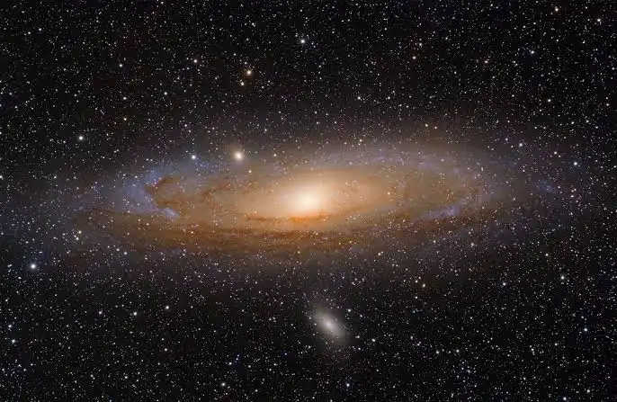

A Galáxia de Andrômeda (Messier 31) é uma gigantesca galáxia espiral localizada a cerca de 2,5 milhões de anos-luz da Terra, na direção da constelação de Andrômeda. Sendo a vizinha espiral mais próxima da Via Láctea, é um dos poucos objetos celestes visíveis a olho nu.